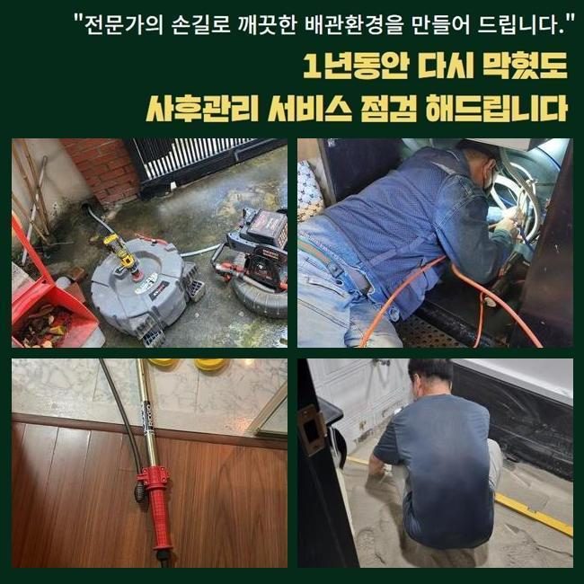
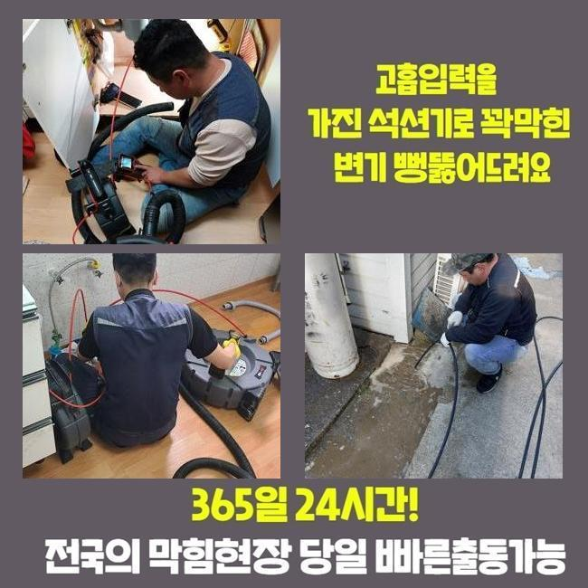
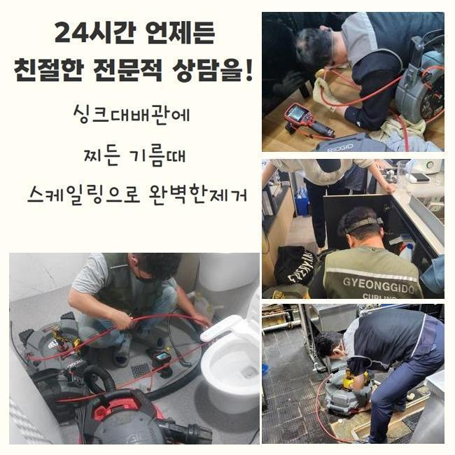
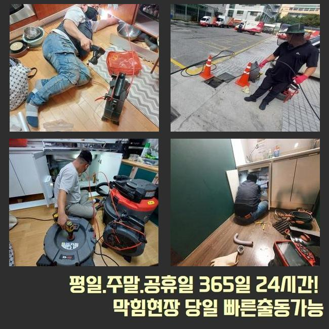
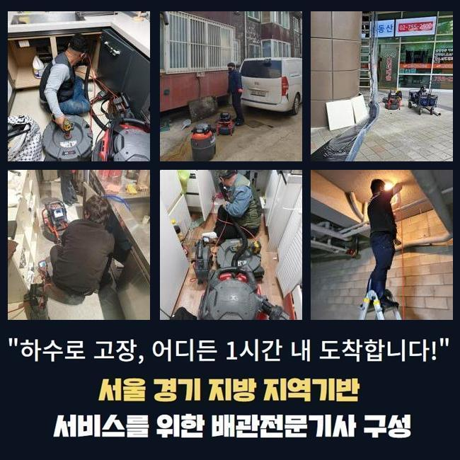
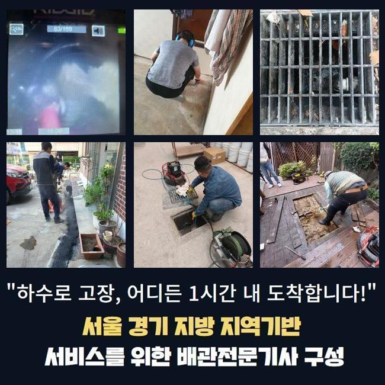
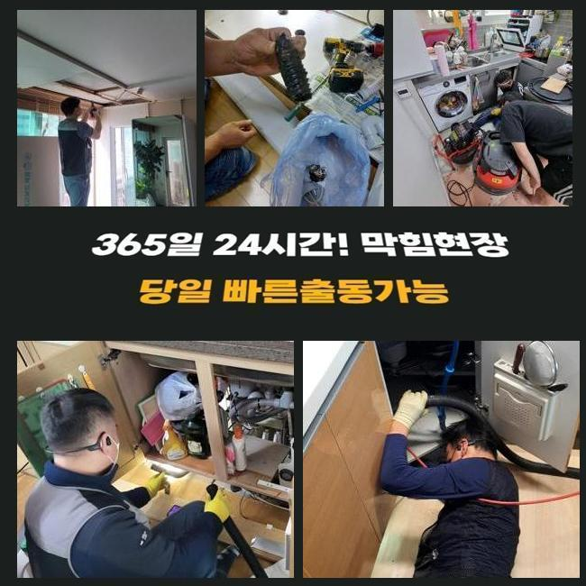

🏠 광주 송정동싱크대배수관막힘 남종면 하수구뚫는곳 누수탐지
광주 남종면 싱크대막힘 전문 시공 후기

📋 작업 개요
- 위치: 광주 남종면, 남종면, 광주
- 서비스 유형: 싱크대막힘, 하수구막힘, 배관막힘, 누수수리, 역류해결, 뚫는업체, 고압세척
- 작업 일시: 2025. 6. 9. 19:47
- 업체명: 하수구수사대 (010-5615-2118)
🔍 문제 상황
집안은 물론이고 공용건물에서도 하수구를 빈번히 만날수 있죠
보편적으로 욕실이나 주방시설에 배관이 위치하고 그를 통하여 오수를 내려보낼수가 많아요
그런 와중에 이용자들이 늘면서 고장이 생길때가 있죠
광주 송정동싱크대배수관막힘 남종면 하수구뚫는곳 누수탐지
그러한 문제는 고객분들의 올바르지 못한 이용에서 이유를 알수 있어요
배관이 처치 불가한 슬러지를 투입시키거나 기름기가 묻은 것들을 버릴때를 들어볼수 있는데요
배수관의 쓰임새가 오수를 처리하는 것이므로 단단한 것들이 넘어간다면 막힘이 생길수 있어요
자주 손을 씻는 화장실에서도 문제상황이 나타나기 쉽습니다
얼굴을 닦으면서 두발이나 세정기구들이 유입되는 상황이 예상외로 많습니다
얼마동안은 고장을 야기하지 않지만 시간의 흐름에 따라 고장이 커지는걸 볼수 있어요
세면대의 배관이 급작스럽게 체증을 보인다면 보통의 일상이 어려워져서 괴로움이 증가하게 되겠죠
이번주에 문의하신 의뢰인분도 해당되는 사안이었죠
먼저 하고 있던 시공을 완료하고 바로 출발하였습니다

🔎 원인 분석
💡 전문가 진단: 정밀 진단 장비를 사용하여 슬러지의 고착 여부를 판명하고 타격/세척 작업을 실시했습니다.
💡 전문가 진단: 정밀 진단 장비를 사용하여 슬러지의 고착 여부를 판명하고 타격/세척 작업을 실시했습니다.
💡 전문가 진단: 정밀 진단 장비를 사용하여 슬러지의 고착 여부를 판명하고 타격/세척 작업을 실시했습니다.
💡 전문가 진단: 정밀 진단 장비를 사용하여 슬러지의 고착 여부를 판명하고 타격/세척 작업을 실시했습니다.
💡 전문가 진단: 정밀 진단 장비를 사용하여 슬러지의 고착 여부를 판명하고 타격/세척 작업을 실시했습니다.
💡 전문가 진단: 정밀 진단 장비를 사용하여 슬러지의 고착 여부를 판명하고 타격/세척 작업을 실시했습니다.
배관에서 정체가 발현되었을때 자기 능력으로 처치할수 있다 생각하시는 고객분들이 많죠
사소한 막힘이라면 자체적으로 해결하는 방안도 강구해볼수 많죠
그런식으로 마무리가 되면 시공비를 줄일수 있기에 여러분께 도움을 주겠죠
그렇긴 반면 수리가 똑바로 안 이루어진다면 정체는 더 악화되기 쉽고 그때문에 수리비도 늘어나겠죠
세면대 구조물은 매우 길쭉한 하수관으로 시설되어서 고객님들이 갖고 있으신 도구들로 이것들을 알아내기 역부족이죠
그러하기에 여러가지의 사태들과 관계된 작업을 시행하기 어렵고 어긋난 방안을 도모할수 있답니다
이번에도 마찬가지로 의뢰인께서 자체적으로 막힘을 처리하려 공들였으나 실패하여 의뢰하셨다고 하네요
의뢰자께서는 뚫어뻥 제품을 활용해서 체증을 해결해보고자 했다고 말씀하시더라고요
세심한 관찰없이 해당 과정만 이어 나간다면 반대로 배수관에 트러블만 가중시킬수 있어요
그러하기에 파이프 막힘문제의 이유를 알아내려면 알맞은 기기들로 관찰하는게 중요하죠
내시경장비를 통하여 하수구의 지름이나 잔재들을 파악할 수 있어요
그리고 온당한 기기를 통하여 막힘을 처치할수 있어요
욕실내부로 자리를 옮기니 세면기에서 바닥면까지 연결된 관을 비롯해서 바닥면부터 시설물 내측으로 위치한 하수관에 고장이 발발하였다고 생각되었습니다
이걸 확인하려면 시설물을 해체시켜서 깊은 지점까지 내시경cctv를 투입해서 관측하는게 중요하죠

🔧 작업 과정
의뢰인 가정 안의 세면기 배수관을 파악하고 분리를 진행해서 파이프 내측을 조사해보기로 했죠
먼저 입구쪽에 내시경장비를 투입시켰고 각양각색의 침전물들이 하수관을 메우고 있는걸 목견하게 되었죠
관로가 정체되는 연유는 많은데 잔존물이 섞여버리면 막힘은 한층 심각해지죠
단순하게 누적되는 것으로 끝나지 않으며 벽면에 붙어버리며 층을 생성시키죠
보통의 이물은 석션기계를 이용해서 무난하게 제거할수 있어요
그러나 딱딱해진 성분은 별개의 시공을 접목해서 클리닝을 이어나가야 하겠습니다
우선 주름파이프를 들어내고 명확하게 잔재들의 모습을 헤아려보기로 했답니다
꽉찬 침전물을 확인한뒤 흡입기를 가동시켜 클리닝하였답니다
다양한 형태의 슬러지들을 제거하기 위해서 장시간 세정을 시행하였죠
그렇지만 배수관에 견고하게 고착화된 석회질과 잔재들은 해당 작업만으로는 완벽한 소제가 난망하단걸 파악하게 되었죠
이에 따라 저희들은 고속 파쇄 기계를 이용하기로 합니다
샤프트기는 단단해진 이물들을 파쇄하여 클리닝을 시행해주는 장비이죠
기기의 상단에 결속된 체인이 연속적으로 돌면서 잔재들을 정리해주죠
장기간 배관에 상존하던 슬러지는 흡입과정 만으론 처리하기 까다로우므로 파쇄시공은 필수과정입니다
그러나 과도하게 가동시키면 관로를 고장내거나 이물정체가 더 증대될수 있어 전문업체에서 실시하는게 합당합니다
단조롭게 설명서만 보고 샤프트기를 사용하면 이상현상이 발발하기도 한단 것을 알립니다
파이프 속을 들여다보는 내시경기기로 꼼꼼하게 분쇄장비를 작동시켰습니다
그러니 여러종류의 이물조각이 떠오르게 되었는데 이것을 놔두면 다시금 파이프를 막아버릴수 있기에 즉각적으로 처리하였습니다
비닐조각을 비롯하여 여러가지의 이물질이 가득했다는 사실을 시공중 알수 있었어요
그러한 정황이 계속된다면 역류사태까지 일어날수 있어 즉각적인 수리가 필수에요
크고작은 잔존물들은 흡입기기로 거듭하여 말끔히 처리하였습니다


✅ 작업 완료
배관내시경으로 배수관 안쪽이 선명하게 복원되었단걸 목도할수 있었죠
세정과정에서 나온 이물들은 마대자루에 정리하였고 업무를 완결하였답니다
그후 통수작업이 온당하게 진행되었는지 점검하기 위해서 배수성능 검사를 해보았죠
여러번 진행했고 신속하게 물빠짐이 이루어진 것을 고객분과 파악하게 되었답니다
배관막힘이 생겼을때 해당 시공과 같이 오염물을 처리하지 않게되면 재발할 확률이 높답니다
저희가 동기를 세심하게 관찰하고 알맞게 공정을 단행하도록 하겠습니다




⚠️ 베란다 누수 및 방수 관리 방법
- ✅ 비가 많이 올 때 창틀 주변이나 아래층 천장에 얼룩이 생기는지 정기적으로 확인해 보세요.
- ✅ 우수관 주변 실리콘 마감이 들뜨거나 깨진 틈새가 있는지 손상 여부를 수시로 체크하세요.
- ✅ 베란다 바닥 타일의 줄눈(메지)이 소실되면 그 틈으로 물이 침투하여 누수가 유발됩니다.
- ✅ 누수 의심 증상 발견 시 방치하면 아래층 손실이 커지므로 즉시 전문가의 진단을 받으십시오.
💡 핵심 정리
- 확실한 장비 작업(내시경 점검 및 샤프트 스케일링)으로 원인을 뿌리 뽑습니다.
- 작업 후 1년 이내에 동일한 부위 재발 시 100% 무상 A/S 서비스를 보장합니다.
- 서울 · 경기 · 인천 전 지역에 24시간 언제든 긴급 출동할 수 있도록 항시 대기 중입니다.
❓ 자주 묻는 질문 (FAQ)
🚨 광주 남종면 싱크대막힘 문제로 고민이신가요?
정확한 원인 진단과 확실한 시공으로 재발 없는 해결을 약속드립니다.
24시간 긴급 출동 | 서울 · 경기 · 인천 전지역 | 1년 내 재발 시 무상 A/S